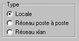

Un groupe de radio-bouton est une autre forme de présentation d'un multi-choix. Dans un groupe de radio-boutons, un seul bouton radio peut être sélectionné à un moment donné.
Exemple :

Ici, le Type peut prendre une des trois valeurs suivantes : Locale, Réseau poste à poste, Réseau xlan.
La donnée réceptrice est attachée au groupe radio (ce dernier est matérialisé par le cadre). Par contre, les radio-boutons ne sont pas attachés à une variable. A chaque radio-bouton correspond une valeur constante qui sera affectée à la donnée du groupe lorsque le bouton est sélectionné.
Etapes de la création d'un groupe de radio-boutons
En premier lieu, il faut insérer dans le masque un objet de type "Groupe de radio-boutons". Après sélection de la donnée réceptrice et saisie du titre, le groupe apparaît comme un cadre vide avec son titre.
Ensuite, il faut insérer les différents radio-boutons à l'intérieur du cadre du groupe. Saisissez un libellé et une valeur pour chaque bouton.
Remarque : les boutons placés hors cadre ne seront pas considérés comme appartenant au groupe radio.
Remarques
Le groupe radio n'a de sens que s'il contient au moins deux radio-boutons. En effet, un groupe radio peut être assimilé à un multi-choix, où chaque choix est représenté par un radio-bouton.
Les différents radio-boutons peuvent être automatiquement créés par Xwin. Dans ce cas, les textes associés aux boutons sont pris dans le dictionnaire des multi-choix.
L'ordre de placement dans le masque des différents radio-boutons et du groupe radio est indifférent. Pendant la saisie dans Xwin, les boutons ne sont pas attachés au groupe ; ils peuvent donc être déplacés d'un groupe à l'autre.
Au moment de quitter la page, Xwin vérifie que tous les radio-boutons appartiennent bien à un groupe (ils doivent être placés à l'intérieur du cadre d'un groupe). Si ce n'est pas le cas, Xwin affiche le message : "Radio-bouton XXXXXXX orphelin".
Vous pouvez alors déplacer le radio-bouton dans un groupe ou le supprimer. Xwin interdit de changer de page tant qu'il reste un radio-bouton orphelin.